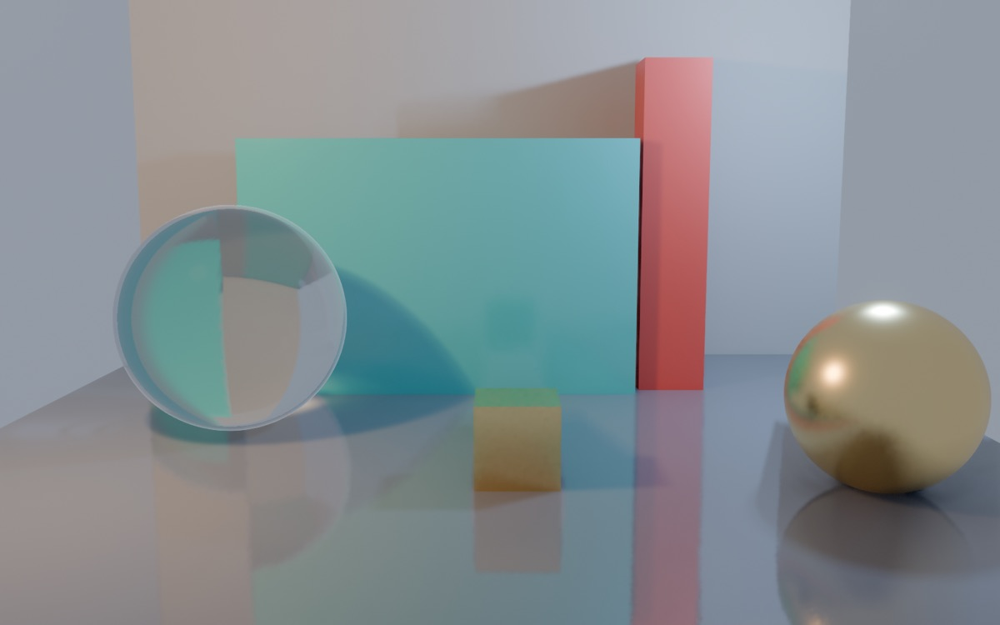

Kraken 0.0.8
for Mac, iPad and iPhone
Kraken 0.0.8 is available on macOS and, for the first time, on iPhone and iPad. This release adds sculpting, a modifier stack, an asset library and Swift scripting.
Free and open source
Get Kraken 0.0.8
Mac
Requires macOS 15 or later on Apple silicon. The app is signed with a Developer ID and notarized by Apple.
iPhone & iPad
Requires iOS 18 or later. Kraken for iPhone and iPad is distributed through TestFlight. Install the TestFlight app, then open the link below on your device.
What’s new in 0.0.8
Kraken on iPhone and iPad
Kraken now runs on iPhone and iPad, with a touch layout built around a bottom dock and timeline. USD files can be opened from the Files app and edited in place.
Sculpting
The new Sculpting tab works directly on the selected mesh. It includes brushes, reference images and volume based remeshing.
Modifier stack
Modifiers are non-destructive and evaluated on the GPU. The stack is stored in the USD stage, and a quad remesher is included.
Asset library
A built-in library of furniture, plants, rooms and materials. Assets are dragged into the viewport and added to the stage as references.
Swift scripting
Scripts are written in Swift and run from File → Run Script… or with Kraken -S script.swift. They call the same operations as the interface.
Renderer
Akari now builds each frame from a render graph written in Swift. This release also adds glass caustics and glass shadows.
Showcase scenes
The repository includes new scenes for caustics, reflections, sculpting, the modifier stack and the asset browser.

Caustics

Reflections

Light probes
Installing
From the disk image
Open Kraken-0.0.8.dmg and drag Kraken to Applications.
From TestFlight
Install TestFlight, open the Kraken link on your device and tap Install. TestFlight installs new builds as they are released.
Opening a scene
Kraken opens .usd, .usda, .usdc and .usdz files from File → Open…, the Files app, or the --usd command line flag.
Kraken 0.0.8
Free and open source under the BSD 3-Clause license. The full list of changes is in the GitHub release.